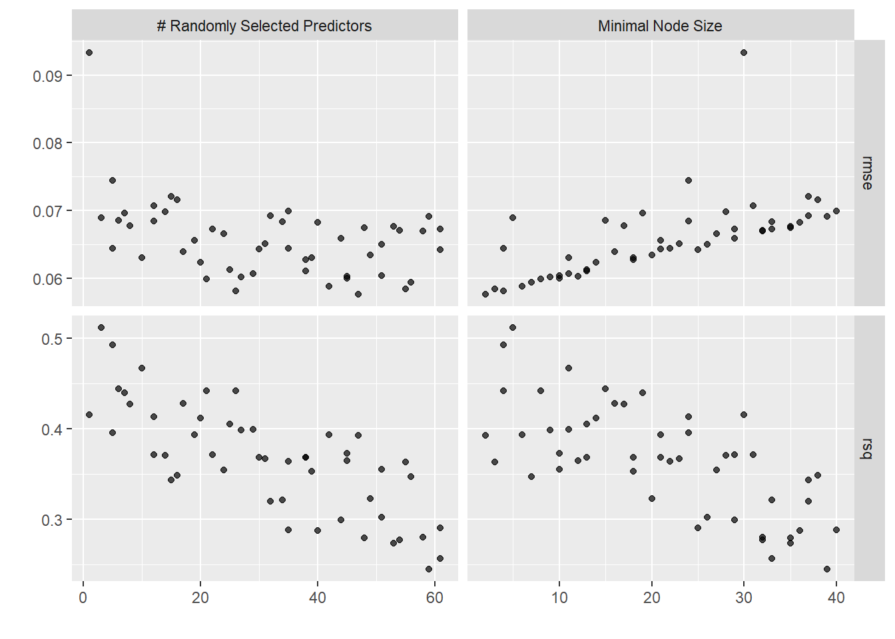
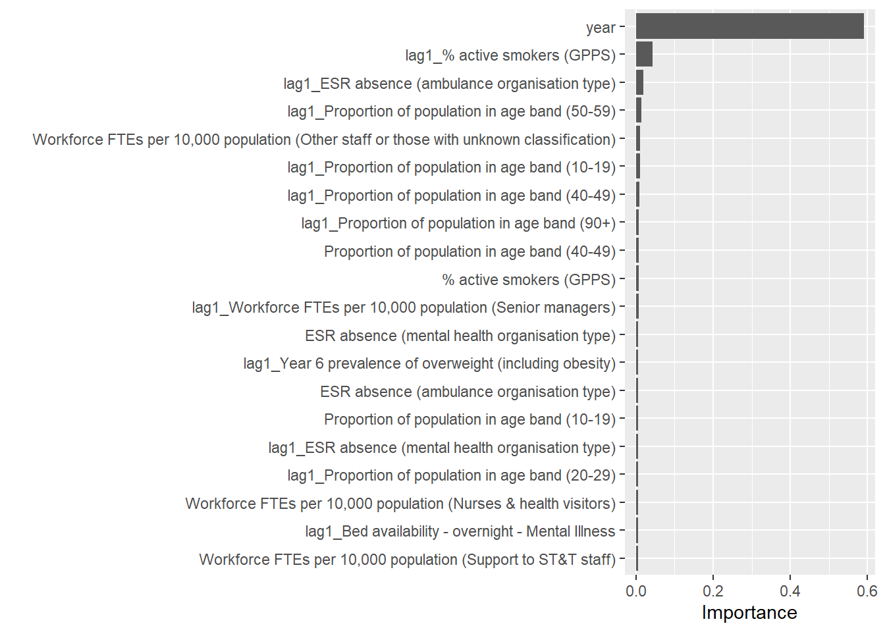

source(here::here("R/00_libraries.R"))
source(here::here("R/01_utils.R"))Random Forest
Setup
Load in the libraries and useful functions.
Load in the pre-prepared data.
metrics <- read.csv(here::here("data/configuration-table.csv"),
encoding = "latin1") |>
filter(!(status %in% c("incorrect geography", "remove"))) |>
select(metric)
dc_data <- list.files(here::here("data"), full.names = TRUE) |>
(\(x) x[!grepl("configuration-table|modelling_data", x)])() |>
purrr::map_dfr(
read.csv
) |>
inner_join(
metrics,
by = join_by(metric)
) |>
filter(
grepl("annual", frequency),
grepl("^Q", org)
) |>
select(
"metric",
"year",
"org",
"value"
) |>
pivot_wider(
names_from = metric,
values_from = value
)Preprocessing
Create dataframe with target and predictor variables.
target_variable <- "Proportion of completed pathways greater than 18 weeks from referral (admitted)"
dc_data <- dc_data |>
select(
all_of(c("org", "year", target_variable)),
matches("^ESR|^Workforce|^Bed|age band|Year 6|GPPS")
) |>
dplyr::filter(
# retain all rows where target variable is not na
# retain all rows where we have population age group information
if_all(
all_of(
c(target_variable, "Proportion of population in age band (80-89)")), ~ !is.na(.))
)
# rows that contain nas
rowSums(is.na(dc_data)) [1] 2 3 2 2 1 4 1 2 2 4 5 2 2 1 3 3 2 4 4 1 1 3 3 4 1 1 0 0 2 2 1 3 3 2 1 3 2
[38] 5 3 5 3 1 2 3 2 1 1 2 1 2 2 4 5 1 2 2 3 3 2 5 4 1 1 3 2 4 2 1 0 0 3 2 1 3
[75] 2 2 1 5 3 5 2 5 3 1 1 4 2 2 1 3 1 2 2 3 8 3 3 3 2 3 2 4 4 1 1 3 2 3 1 1 0
[112] 0 4 2 1 3 2 2 1 4 2 4 3 3 3 1 1 4 2 1 1 2 1 2 3 3 7 3 3 3 2 3 2 4 4 1 1 2
[149] 2 3 1 1 0 0 3 2 1 4 2 2 1 3 2 4 3 2 3 1 1 4 2 1 1 2 1 2 3 4 7 3 4 2 3 3 2
[186] 4 4 1 1 2 2 3 1 1 0 0 3 2 1 2 2 2 1 3 2 4 3 3 4 1 1 3 2 1 1 2 1 2 3 4 7 3
[223] 4 4 3 2 4 3 1 2 1 2 3 0 1 0 1 2 3 1 2 2 0 2 2 4 3 3 4 1 2 1 1 4 3 1 1 2 1
[260] 2 3 3 6 2 4 3 2 4 3 1 1 3 2 3 1 1 0 1 2 3 1 2 2 0 2 2 3 3 3 4 2 2 3 1 3 4
[297] 4 3 3 2 2 2 6 4 5 4 3 4 2 2 4 4 2 2 2 4 1 3 4 5 4 5 2 4 4 2 5 3 3 4 1 4 4
[334] 3 2 2# columns that contain nas
colSums(is.na(dc_data)) |>
tibble::enframe()# A tibble: 52 × 2
name value
<chr> <dbl>
1 org 0
2 year 0
3 Proportion of completed pathways greater than 18 weeks from referral (… 0
4 Bed availability - day - General & Acute 0
5 Workforce FTEs per 10,000 population (Professionally qualified clinica… 0
6 Workforce FTEs per 10,000 population (HCHS Doctors) 0
7 Workforce FTEs per 10,000 population (Consultant) 0
8 Workforce FTEs per 10,000 population (Associate Specialist) 0
9 Workforce FTEs per 10,000 population (Specialty Doctor) 0
10 Workforce FTEs per 10,000 population (Staff Grade) 28
# ℹ 42 more rowsAdd lag variables.
dc_data <- dc_data |>
mutate(
across(
matches("^ESR|^Workforce|^Bed|age band|Year 6|GPPS"),
.names = "lag1_{.col}",
.fns = lag
),
.by = org
) |>
arrange(year, org){tidymodels}
- Split the data
- Select the modelling method (random forest from the ranger package)
- Impute missing data (median)
set.seed(321)
# split dataset into train, validation and test
splits <- rsample::initial_validation_time_split(
data = dc_data#,
# lag = 1
)
data_train <- rsample::training(splits)
data_validation <- rsample::validation(splits)
data_test <- rsample::testing(splits)
data_train_validation <- bind_rows(
data_train,
data_validation
)
# check when train, validation and test data start and finish
lapply(
list(data_train, data_validation, data_test),
function(x) range(x$year)
)[[1]]
[1] 2013 2017
[[2]]
[1] 2017 2019
[[3]]
[1] 2019 2020data_validation_set <- validation_set(splits)
# how many cores on the machine so we can parallelise
cores <- parallel::detectCores()
# set model
rf_mod <-
rand_forest(
mtry = tune(),
min_n = tune(),
trees = 1000
) %>%
set_engine("ranger", num.threads = cores) %>%
set_mode("regression")
# create recipes
# interaction variables (year and variables?)
# impute missings?
# variables with missing data
missing_data <- names(dc_data)[colSums(is.na(dc_data)) > 0]
rf_recipe <-
recipe(`Proportion of completed pathways greater than 18 weeks from referral (admitted)` ~ .,
data = data_train_validation) %>%
step_impute_median(all_of(missing_data))# %>%
# step_lag(matches("^ESR|^Workforce|^Bed|age band|Year 6|GPPS"),
# lag = 1:2)Set up {tidymodels} workflow:
- Add model to workflow
- Add recipe to workflow
# add recipe to workflow
rf_workflow <-
workflow() |>
add_model(rf_mod) %>%
add_recipe(rf_recipe)Tune the hyperparameters.
# design the tuning of the hyperparameters
rf_res <-
rf_workflow %>%
tune_grid(data_validation_set,
grid = 50,
control = control_grid(save_pred = TRUE))i Creating pre-processing data to finalize unknown parameter: mtryWarning in `[.tbl_df`(x, is.finite(x <- as.numeric(x))): NAs introduced by
coercion# show the best parameters
rf_res %>%
show_best(metric = "rmse")# A tibble: 5 × 8
mtry min_n .metric .estimator mean n std_err .config
<int> <int> <chr> <chr> <dbl> <int> <dbl> <chr>
1 75 2 rmse standard 0.0468 1 NA Preprocessor1_Model07
2 89 3 rmse standard 0.0471 1 NA Preprocessor1_Model25
3 90 7 rmse standard 0.0471 1 NA Preprocessor1_Model34
4 68 6 rmse standard 0.0476 1 NA Preprocessor1_Model23
5 81 10 rmse standard 0.0479 1 NA Preprocessor1_Model27autoplot(rf_res)
# select the best parameters
rf_best <-
rf_res %>%
select_best(metric = "rmse")
# the last model
last_rf_mod <-
rand_forest(mtry = rf_best$mtry, min_n = rf_best$min_n, trees = 1000) %>%
set_engine("ranger", num.threads = cores, importance = "impurity") %>%
set_mode("regression")
# the last workflow
last_rf_workflow <-
rf_workflow %>%
update_model(last_rf_mod)
# the last fit
set.seed(345)
last_rf_fit <-
last_rf_workflow %>%
last_fit(splits)
last_rf_fit %>%
collect_metrics()# A tibble: 2 × 4
.metric .estimator .estimate .config
<chr> <chr> <dbl> <chr>
1 rmse standard 0.115 Preprocessor1_Model1
2 rsq standard 0.0773 Preprocessor1_Model1Variable importance
last_rf_fit %>%
extract_fit_parsnip() %>%
vip::vip(num_features = 20)